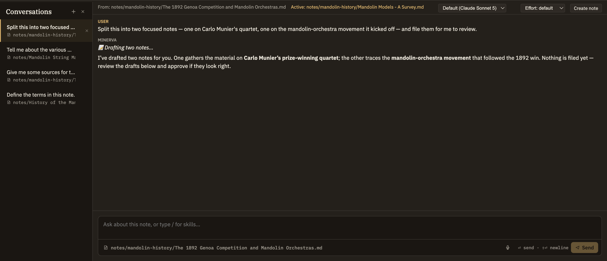

Docs/Conversations/Chatting with the AI
Chatting with the AI
Conversations let you think out loud with an assistant that knows your notes. The panel has your open conversations on the left and the active chat on the right. Instead of quietly reading everything you've ever written, the assistant searches your notes, follows links, or looks something up on the web only when it actually needs to — and tells you what it found.
Opening a conversation
The conversations panel sits below the editor and stays out of sight until you call for it. There are a few ways to start:
A conversation started from a note isn't locked to it. If you switch to a different note while chatting, the assistant keeps track of both — the note you started from and the one you're looking at now — so when you say "this note," it knows which one you mean.
How the assistant knows your notes
The assistant doesn't read your whole knowledge base every time you send a message. Instead it reaches for what it needs, when it needs it, and can:
The only thing the assistant always knows up front is today's date and which note you're working with. Everything else it goes and finds on purpose.
The assistant can read and reason across your notes freely, since reading changes nothing. But it can never edit your knowledge base on its own. When it wants to add or change something, it offers a draft you can accept or discard — see The propose → review → approve loop.
Sending a message
Type in the composer and press ⏎ to send, or ⇧⏎ for a new line. Starting a line with / brings up a menu of quick commands and thinking tools you can run in the chat — for example, a command to tidy up a long conversation into a shorter summary. If voice input is turned on, a mic button next to Send lets you dictate your message out loud. Your message appears in the transcript right away, so you can see it while the assistant works on a reply.
Watching a reply come in
Replies appear a little at a time as the assistant writes, with a small "thinking" indicator that stays put during any pause — including while it's off searching your notes or the web. Formatting shows up as it goes, so nothing jumps around when the reply finishes. While a reply is in progress, the Send button turns into Cancel so you can stop it at any time.
Citations and references
When the assistant uses the web, each source it relied on shows up as a numbered note beneath the reply, with the title, the site, and the exact passage it quoted. Click one to open the page in your browser. A cite action next to it saves the source to your library and drops a citation into whichever note the conversation is tied to — the same way you'd cite a source anywhere else in Minerva.
When the assistant refers to your own notes, it simply names them in its reply, so you can jump straight to what it was reading.
